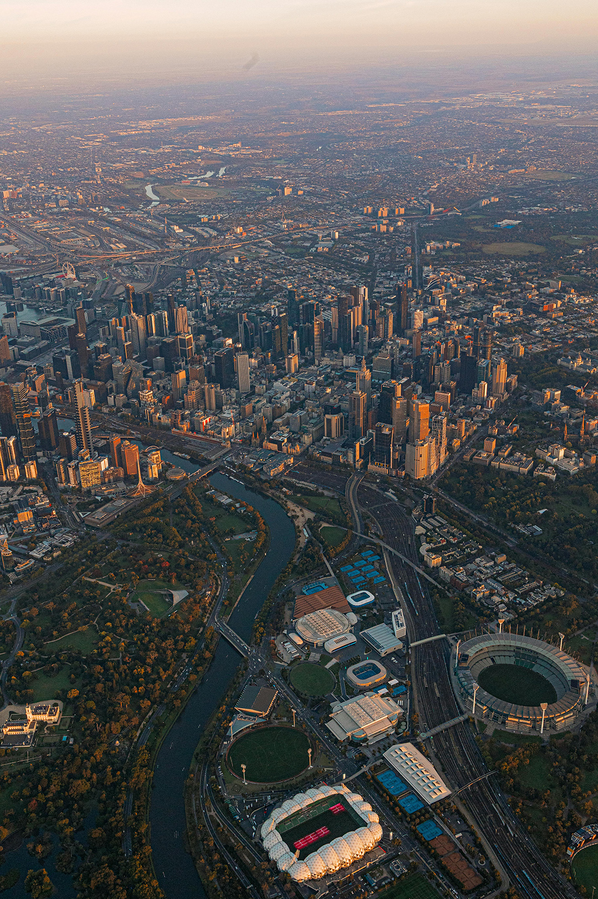

Las islas de calor urbano intensifican las temperaturas en las ciudades y afectan la salud y calidad de vida de sus habitantes. Este texto explora por qué ocurre este fenómeno urbano, qué tecnologías y metodologías existen para su medición, y qué estrategias globales y locales están transformando el calor urbano extremo en oportunidades para rediseñar ciudades más habitables y resilientes.

Las islas de calor urbano son zonas donde la temperatura del aire y de la superficie es entre 1 y 12 °C más alta que en áreas urbanas aledañas, según la Environmental Protection Agency. Este fenómeno es producto de una combinación de factores inherentes a la forma en la que concebimos y construimos las ciudades actualmente: materiales que absorben calor, alta densidad, escasez de vegetación y actividades humanas que emiten calor residual.
Los impactos son profundos. La Organización Mundial de la Salud estima que el calor extremo será uno de los mayores riesgos ambientales para la salud urbana en este siglo. En 2023, un estudio liderado por el Instituto de Salud Global de Barcelona registró cerca de 48,000 muertes por calor en Europa.En Estados Unidos, los Centros para el Control y la Prevención de Enfermedades reportan un promedio de 702 muertes anuales relacionadas con el calor entre 2004 y 2018. En Asia, un metaanálisis que cubre 88 ciudades encontró diferencias de hasta 11 °C dentro de un mismo centro urbano, con un promedio de 4.1 °C de diferencia entre las zonas más templadas y las ICU identificadas en estas ciudades.
En América Latina, la urbanización acelerada y la informalidad intensifican los riesgos. El INEGI estima que más del 80 por ciento de la población mexicana vive en ciudades, muchas con baja cobertura vegetal, alta exposición solar y superficies de asfalto oscuro. En un análisis de INDI Lab con datos satelitales de la NASA, se identificaron puntos críticos de calor superficial en corredores como Iztapalapa y el oriente de la Zona Metropolitana del Valle de México, donde las temperaturas pueden superar los 50 °C en superficie terrestre durante los meses más cálidos.
El resto de la CDMX, y ciudades como Monterrey, Guadalajara y Mérida muestran patrones similares. Las colonias con menos áreas verdes por habitante presentan temperaturas más altas y mayor vulnerabilidad sanitaria. En muchos casos, estas zonas coinciden con barrios de menores ingresos e históricamente marginados de inversión pública, convirtiendo al calor urbano extremo en un desafío de justicia climática.
Estas tendencias exigen nuevas estrategias urbanas, políticas públicas robustas y capacidades tecnológicas para medir, modelar y mitigar el calor extremo.
Las islas de calor urbano surgen por una combinación de factores físicos, ambientales y antrópicos. Los materiales tradicionales urbanos como asfalto, concreto y ladrillo tienen alta capacidad de absorción térmica y liberan calor lentamente durante la noche. La densidad urbana, la forma y orientación de los edificios reducen la ventilación, atrapando aire caliente en lo que se conoce como efecto cañón urbano. La reducción de vegetación disminuye la evapotranspiración, proceso mediante el cual las plantas enfrían el aire al liberar humedad. A esto se suman las emisiones térmicas de vehículos, industrias, equipos de aire acondicionado y procesos de enfriamiento en edificios.
"En conjunto, la manera en que urbanizamos amplifica este fenómeno, aunque también abre la posibilidad de imaginar futuros urbanos distintos."Medir las ICU requiere una combinación de sensores satelitales, estaciones meteorológicas y análisis geoespacial. Para el estudio de temperatura superficial, satélites como Landsat 8 y Landsat 9 permiten obtener datos térmicos de la superficie terrestre con resoluciones entre 30 y 100 metros. Estos datos pueden procesarse mediante índices como NDVI para vegetación, NDBI para áreas construidas y LST para temperatura superficial terrestre. Su análisis conjunto permite identificar patrones espaciales en centros urbanos y determinar la existencia de Islas de Calor.
A nivel de modelación urbana, técnicas avanzadas permiten proyectar escenarios térmicos. El uso de simulaciones Monte Carlo, distribución beta PERT para tasas de absorción térmica y modelos urbanos tipo ENVI-met ayudan a evaluar cómo distintas intervenciones afectan la temperatura. Estos modelos permiten comparar escenarios de pavimentos reflectantes, techos fríos, corredores verdes o cambios en la proporción de sombra urbana a distintas horas del día.
Dado su origen multifactorial, la mitigación efectiva de ICU no depende de una sola solución, sino de un conjunto de intervenciones físicas, normativas, tecnológicas y sociales. A nivel internacional destacan ciertas prácticas que logran combinar satisfactoriamente infraestructura verde, materiales reflectantes y rediseños urbanos para mitigar la acumulación de calor en contextos urbanos:
Distintos estudios muestran que por cada 10 por ciento adicional de
cobertura vegetal en una superficie construida, se puede reducir
entre 0.5 y 1.5°C la temperatura del área en cuestión.
• Es por esto que ciudades como Singapur han impulsado normativas
estableciendo techos verdes obligatorios en nuevos desarrollos, lo
que ha reducido hasta 2°C la temperatura superficial en áreas
específicas.
• Los corredores verdes de Medellín, reconocidos por ONU Habitat,
lograron disminuir hasta 3°C la temperatura en zonas intervenidas
mediante vegetación endémica y un manejo hídrico adecuado.
•
En la Ciudad de México, se ofrecen incentivos fiscales para
propietarios de edificios nuevos y existentes en los que se instalen
azoteas verdes.

A pesar de no existir un dato preciso, se estima que cerca del 40% de las superficies urbanas en Estados Unidos está cubierta por pavimento. El pavimento tradicional, compuesto principalmente por mezclas asfálticas con valores de albedo típicamente bajos (0.04 a 0.12), absorbe hasta 90 por ciento de la radiación solar incidente, almacenándola en su masa térmica y liberándola lentamente durante la noche; este proceso eleva la temperatura superficial del suelo entre 10 y 20 °C respecto a zonas vegetadas y contribuye directamente al incremento de la temperatura del aire en la zona inmediata. Los llamados pavimentos fríos o reflectantes se presentan como una alternativa sin efectos negativos al estar compuestos de materiales que aumentan el albedo urbano y reducen la absorción de energía solar. En Los Ángeles, la aplicación de pavimento reflectante redujo hasta en 5.6 °C la temperatura superficial del suelo en calles del programa piloto “Cool Streets LA” impulsado por la Oficina de Servicios Viales de la ciudad. El albedo es la capacidad de una superficie para reflejar la radiación solar en lugar de absorberla. Se mide como un valor adimensional entre 0 y 1 mediante sensores fotométricos o satelitales que registran la fracción de radiación reflejada; superficies claras como nieve o techos blancos pueden tener valores de 0.8–0.9, mientras que pavimentos oscuros y asfalto típico están entre 0.04–0.12, lo que determina cuánto calor se retiene en el entorno construido.
El diseño táctico a nivel de barrio se presenta como una alternativa local para mejorar los microclimas urbanos. Distintas ciudades del mundo usan pintura reflectante, mobiliario modular y vegetación de bajo mantenimiento para transformar calles y cambiar la sensación térmica a nivel peatonal, con beneficios adicionales como menor exposición a contaminantes y ruido urbano. Barcelona, por ejemplo, ha promovido la creación de supermanzanas como parte del programa “Superilles”, que reorganiza bloques de manzanas para reducir hasta 90 por ciento el tráfico vehicular de paso, mejorar la calidad del aire y habilitar más espacio peatonal con vegetación, mobiliario y zonas de sombra permanentes y temporales. En el barrio de Sant Antoni, por ejemplo, se registraron reducciones significativas de ruido y NO₂, como producto de las nuevas áreas verdes que a su vez generan microclimas más frescos. En Tokio, las estrategias de enfriamiento urbano incluyen programas de sombra con lonas térmicas, estructuras ligeras y el uso de pavimentos fríos y recubrimientos de barrera térmica impulsados por el gobierno metropolitano. Estas intervenciones buscan disminuir la temperatura superficial del suelo y crear microclimas más confortables, especialmente en calles, plazas y zonas vulnerables al calor.
En Nueva York, programas como Heat Watch emplean sensores móviles de alta resolución instalados en vehículos y bicicletas para medir la temperatura, humedad y ubicación, con registros cada segundo. Estos sensores permiten generar mapas térmicos a escala de calle, con datos que representan una experiencia urbana individual. Esta metodología ha permitido identificar diferencias de hasta 10 °C entre vecindarios durante olas de calor. El análisis de estos datos ha permitido correlacionar zonas históricamente desinvertidas con mayores temperaturas y riesgos de salud. Los datos se integran con modelos satelitales y socioeconómicos para priorizar intervenciones en comunidades vulnerables, como tácticas de expansión de sombra, vegetación y superficies permeables, y han servido para promover políticas y acciones locales de justicia climática.
Melbourne
impulsa una Estrategia de Bosque Urbano que combina monitoreo aéreo
de alta resolución y sensores en árboles para evaluar su salud,
estrés hídrico y capacidad de enfriamiento. Sus plataformas
digitales integran datos de cobertura vegetal, temperatura y
vulnerabilidad social, permitiendo identificar barrios críticos y
medir el impacto de intervenciones en tiempo real. La ciudad busca
duplicar la cobertura de dosel arbóreo para 2040, reducir
temperaturas superficiales en zonas prioritarias y optimizar
recursos mediante riego inteligente y mantenimiento predictivo,
demostrando cómo la tecnología y ciencia de datos pueden amplificar
el impacto climático y social de la vegetación urbana.
Estos casos ilustran cómo la combinación de políticas,
diseño, tecnología y naturaleza puede transformar el calor en
oportunidades de regeneración urbana.
Para México y la región, la mitigación de ICU implica fortalecer la gobernanza climática urbana y actualizar las normas sobre materiales, vegetación y diseño de calles. Muchas ciudades carecen de lineamientos claros sobre albedo mínimo en pavimentos y techos, densidad vegetal mínima por hectárea o índices de sombra urbana por vialidad. Incluir estos parámetros en reglamentos de construcción y normas técnicas urbanas puede reducir el calor extremo sin requerir grandes inversiones.
En muchos países en desarrollo, gran parte del crecimiento urbano proviene de la autoconstrucción y la informalidad, donde la falta de regulación y asistencia técnica produce viviendas densas con materiales de alta absorción térmica. Este contexto limita la eficacia de las soluciones convencionales de enfriamiento y requiere tácticas adaptadas a estas realidades urbanas: materiales reflectivos asequibles, techos fríos comunitarios, vegetación nativa modular, y sistemas de sombreado autoconstruibles. Diseñar para este entorno implica reconocer la agencia comunitaria, promover intervenciones abiertas y replicables, y habilitar modelos de cofinanciamiento que escalen sin desplazar a la población.
Aunado a estas soluciones territoriales, a nivel sistémico los planes parciales de desarrollo deben integrar mapas térmicos, priorizando intervenciones en zonas vulnerables por densidad, edad, salud o vulnerabilidad. Con un análisis de datos a nivel AGEB, por ejemplo, es posible diseñar corredores verdes, techos fríos o pavimentos reflectantes en colonias donde la carga térmica afecta más a población sensible.
La infraestructura verde puede escalarse con especies endémicas y sistemas hídricos como zanjas de infiltración o jardines de lluvia. Las ciudades deben considerar financiamiento climático para implementar estas soluciones. Fondos como el Green Climate Fund o los Bonos Verdes ofrecen oportunidades de inversión y financiamiento alternativo al presupuesto público.
La tecnología y el aprovechamiento de la gran cantidad de datos urbanos con los que se cuenta es un componente clave. La capacidad de mapear ICU, analizarlas con modelos térmicos y priorizar soluciones con base en datos permite gobernar el calor como un servicio urbano más. La combinación de satélites, sensores climáticos y modelos de simulación permiten tomar decisiones basadas en evidencia.
Para México y la región, la mitigación de ICU implica fortalecer la gobernanza climática urbana y actualizar las normas sobre materiales, vegetación y diseño de calles. Muchas ciudades carecen de lineamientos claros sobre albedo mínimo en pavimentos y techos, densidad vegetal mínima por hectárea o índices de sombra urbana por vialidad. Incluir estos parámetros en reglamentos de construcción y normas técnicas urbanas puede reducir el calor extremo sin requerir grandes inversiones.